Rust in China
github.com/brson/rust-in-chinaAbout us

Brian

Aimee
Rust is not a success in China
Overview
- Production users
- Obstacles
- Community highlights
- Future
Rust
production users
in China
- Rust SGX SDK - Rust in secure enclaves
- Mesalink - OpenSSL-compatible TLS
- Mesabox - BusyBox but Rust
- Mesalock Linux - Linux in Rust
- TiKV - A distributed key-value store
- raft-rs - The raft consensus protocol
- rust-prometheus - Metrics reporting
- rust-rocksdb - Bindings to RocksDB
- grpc-rs - Bindings to gRPC reference
Obstacles to Rust in China
Obstacles to Rust in China
- The GFW
- Inoperative Rust infrastructure
- WeChat and community building
- Engineering culture
The failures
of the Rust team
in China
Rust in China
community spotlight
Community organizers
- Alex Zhang
- Mike Tang
rust.cc
www.rust-lang.org/zh-CN/
Alex, Balthild, CrLF0710, Junjie, Keming, Oling Cat, Planet6174, Xidorn Quan, Yiyuan, baishen, ltq2002gcn, sora

Future of Rust in China
- Solutions from within
- Led by a just few companies
- Please fix cargo and rustup
- WeChat vs. ?
- More outreach, training, sponsorship